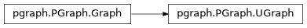

Construction and basic usage
There are a number of ways to build a UGraph (undirected) or DGraph (directed): a plain
constructor, or from a dictionary or an adjacency matrix. Graph is their common base class,
used in type hints, and Graph(directed=flag) chooses the kind from a value.
See Object lifecycle and graph-membership policy for the rules around constructing vertices/edges standalone, independent of a graph.
Base class for all graphs |
|
Class for directed graphs |
|
Class for undirected graphs |
|
Create graph from parent/child dictionary |
|
Create graph from adjacency matrix |
- class DGraph(*, metric=None, heuristic=None, verbose=False, dim=None, vertex_class=None, edge_class=None, directed=None)[source]
Bases:
GraphClass for directed graphs
Vertices are
Vertexobjects, or instances of the subclass given asvertex_class. Edges areEdgeobjects, or instances of the subclass given asedge_class; seeGraphfor the constructor arguments and the exceptions they raise.An edge is recorded as leaving its start vertex and entering its end vertex, and an edge supplied to
Vertex.connect()must run exactly from that vertex to the other.
- class UGraph(*, metric=None, heuristic=None, verbose=False, dim=None, vertex_class=None, edge_class=None, directed=None)[source]
Bases:
GraphClass for undirected graphs
Vertices are
Vertexobjects, or instances of the subclass given asvertex_class. Edges areEdgeobjects, or instances of the subclass given asedge_class; seeGraphfor the constructor arguments and the exceptions they raise.An edge is recorded at both of its vertices, so it is found from either end, and an edge supplied to
Vertex.connect()may have its endpoints in either order.
- class Adjacency(A, coords=None, names=None, **kwargs)
Bases:
Create graph from adjacency matrix
- Parameters:
- Raises:
ValueError –
Ais not square, or the length ofnamesor the number of rows ofcoordsdoes not matchATypeError –
vertex_classoredge_classis not a suitable class, seeGraph
- Returns:
graph
- Return type:
Behaves like a constructor for a
DGraphorUGraphcreating the graph from an adjacency matrixA. Here non-zero elementsA[i,j]correspond to edges from vertexito vertexj.A non-zero diagonal element
A[i,i]is a self-loop on vertexi, for both kinds of graph.Warning
For an undirected graph
Ashould be symmetric but this is not checked. Only the upper triangular part, including the diagonal, is used. Elements are costs, not edge counts: a non-zero element is a single edge with that element as its cost, so parallel edges cannot be created this way.- Seealso:
- class Dict(d, reverse=False, **kwargs)
Bases:
Create graph from parent/child dictionary
- Parameters:
- Raises:
TypeError –
vertex_classoredge_classis not a suitable class, seeGraph- Returns:
graph
- Return type:
Behaves like a constructor for a
DGraphorUGraphfrom a dictionary that maps vertices to parents. From this information it can create a graph that is a tree or forest.By default parent vertices are linked their children. If
reverseis True then children are linked to their parents.>>> from pgraph import UGraph >>> d = {'b': 'a', 'c': 'a', 'd': 'b'} >>> g = UGraph.Dict(d) >>> print(g) UGraph: 4 vertices, 3 edges, 1 component
- Seealso:
Inherited methods for all graph types
- class Graph(*, metric=None, heuristic=None, verbose=False, dim=None, vertex_class=None, edge_class=None, directed=None)[source]
Base class for all graphs
A graph is a set of
Vertexobjects joined byEdgeobjects, which are directed or not according to the kind of graph:UGraphis undirected andDGraphis directed. This class holds everything they share, andGraph(directed=flag)makes one or the other. The constructor arguments are described below.- __contains__(item)[source]
Test if vertex in graph
- Parameters:
item (Vertex subclass or str) – vertex or name of vertex
- Returns:
true if vertex exists in the graph
- Return type:
'name' in graphis true if a vertex named'name'exists in the graph.v in graphis true if the vertex referencevexists in the graph.
- __getitem__(i)[source]
Get vertex (base class method)
- Parameters:
- Raises:
IndexError –
iis an integer outside the range of verticesKeyError –
iis a name that is not in the graphTypeError –
iis none of the types above
- Returns:
the referenced vertex
- Return type:
Vertex subclass
Retrieve a vertex by index or name:
g[i]is the i’th vertex in the graph. This reflects the order of addition to the graph.ican be any integer, including a NumPy integer such as the result ofnp.argmin(), and a negativeicounts from the last vertex.g[s]is vertex namedsg[v]isvwherevis aVertexsubclass
This method also supports iteration over the vertices in a graph:
for v in g: print(v)
will iterate over all the vertices.
- __init__(*, metric=None, heuristic=None, verbose=False, dim=None, vertex_class=None, edge_class=None, directed=None)[source]
Graph, undirected or directed
- Parameters:
metric (callable or str, optional) – distance metric, defaults to “L2”
heuristic (callable or str, optional) – heuristic distance metric for A*, defaults to the same as
metricverbose (
bool) – print diagnostic information as vertices/edges are added, defaults to Falsedim (int, optional) – required length of every vertex’s
coord, defaults to None (unconstrained – vertices may have coordinates of any length, or none at all)vertex_class (subclass of
Vertex, optional) – class of the vertices this graph creates, defaults toVertexedge_class (subclass of
Edge, optional) – class of the edges this graph creates, defaults toEdgedirected (bool, optional) – whether the edges are directed, defaults to False for
Graphand is fixed by the class forUGraphandDGraph
- Raises:
ValueError –
dimis given but is not a positive integerValueError –
directedcontradicts the class, for exampleUGraph(directed=True)TypeError –
vertex_classis not a subclass ofVertex, oredge_classis not a subclass ofEdge
Graph(directed=True)is aDGraphandGraph()aUGraph, so the kind can be chosen by a variable:g = Graph(directed=is_directed)
UGraphandDGraphremain, and are whatisinstanceand the documentation refer to. Everything else, the vertices included, is the same for both kinds, so there is one vertex class,Vertex. A vertex has no direction of its own; the graph it belongs to decides how an edge is recorded at its ends.All arguments are keyword-only, so
UGraph(dim=6)is correct andUGraph(6)raisesTypeError.Changed in version 1.0: Arguments are keyword-only. In 0.6.5 the first positional argument was accepted and ignored, so
UGraph(6)silently did nothing.vertex_classandedge_classlet user subclasses be built by the graph, so they never need to be constructed by hand:g = UGraph(vertex_class=MyVertex, edge_class=MyEdge) v = g.add_vertex([0, 0]) # a MyVertex e = g.add_edge(v, w) # a MyEdge
The classes are called as
vertex_class(coord, name=name)andedge_class(v1, v2, cost=cost, data=data), so a subclass that overrides__init__must accept and pass on those arguments. A graph given avertex_classonly accepts vertices of that class inadd_vertex(), and one given anedge_classonly accepts edges of that class.- Seealso:
UGraphDGraphadd_vertex()add_edge()vertex_classedge_class
- __iter__()[source]
Iterate over the vertices of the graph
- Returns:
iterator over vertices, in order of addition
- Return type:
iterator of Vertex subclass
>>> from pgraph import UGraph >>> g = UGraph() >>> v1 = g.add_vertex(coord=[0,0], name='v1') >>> v2 = g.add_vertex(coord=[1,1], name='v2') >>> v3 = g.add_vertex(coord=[2,2], name='v3') >>> for v in g: ... print(v) [v1] [v2] [v3]
- Seealso:
- __repr__()[source]
Detailed representation of the graph, one line per vertex
- Returns:
one line per vertex showing its name, coordinate and component
- Return type:
>>> from pgraph import UGraph >>> g = UGraph() >>> v1 = g.add_vertex(coord=[0,0], name='v1') >>> v2 = g.add_vertex(coord=[1,1], name='v2') >>> v3 = g.add_vertex(coord=[2,2], name='v3') >>> g.add_edge(v1, v2) Edge{[v1] -- [v2], cost=1.414} >>> g.add_edge(v2, v3) Edge{[v2] -- [v3], cost=1.414} >>> repr(g) 'UGraph:\n v1 at [0 0] component=0\n v2 at [1 1] component=0\n v3 at [2 2] component=0'
- __str__()[source]
Human-readable summary of the graph
- Returns:
one-line summary of vertex/edge/component counts
- Return type:
Counts of 1,000 or more have thousands separators.
>>> from pgraph import UGraph >>> g = UGraph() >>> v1 = g.add_vertex(coord=[0,0], name='v1') >>> v2 = g.add_vertex(coord=[1,1], name='v2') >>> v3 = g.add_vertex(coord=[2,2], name='v3') >>> g.add_edge(v1, v2) Edge{[v1] -- [v2], cost=1.414} >>> g.add_edge(v2, v3) Edge{[v2] -- [v3], cost=1.414} >>> str(g) 'UGraph: 3 vertices, 2 edges, 1 component'
- Seealso:
- copy()[source]
Deepcopy of graph
- Returns:
deep copy
- Return type:
The copy has its own vertices and edges, which keep their class, name, coordinate, cost and any attributes the user has added, and in the same order, so it can be modified without affecting the original.
A graph can also be pickled, and copied with
copy.deepcopy(), which this method calls. Both work for a graph of any size. A vertex or an edge cannot be pickled or copied on its own, since it has no meaning apart from its graph: aTypeErroris raised, and the graph should be copied instead.Note
A metric or heuristic given by name (
"L1","L2","SE2") is pickled by name. A function you supply must be importable at module level to be pickled; alambdaor a function defined inside another function can be copied but not pickled.Attributes that you add to vertices or edges must not refer to other vertices or edges of the graph, since those cannot be pickled on their own.
A pickle is not a long-term storage format. Use
export()for that.
Changed in version 1.0: Pickling a graph works, and copying one no longer fails with a
RecursionErrorfor a graph with a path of about a hundred vertices.Copies the graph, its vertices and edges, but not any external data that may be attached to them. The copy is a new graph of the same kind, with the same vertices and edges, but the vertices and edges are new objects.
- Seealso:
- property edge_class: type[Edge]
Class of the edges this graph creates
- Returns:
edge class
- Return type:
subclass of
Edge
This is read-only. It is set by the
edge_classargument of the graph constructor, seeGraph, and isEdgeif not given.- Seealso:
- property heuristic: Callable[[ndarray[tuple[Any, ...], dtype[_ScalarT]]], float]
Get the heuristic distance metric for graph
- Returns:
heuristic distance metric
- Return type:
callable
This is a function of a single coordinate-difference vector (shape
(n,)), returning a scalar distance.
- property metric: Callable[[ndarray[tuple[Any, ...], dtype[_ScalarT]]], float]
Get the distance metric for graph
- Returns:
distance metric
- Return type:
callable
This is a function of a single coordinate-difference vector (shape
(n,)), returning a scalar distance.
- show()[source]
Print a summary of all vertices and edges to stdout
>>> from pgraph import UGraph >>> g = UGraph() >>> v1 = g.add_vertex(coord=[0,0], name='v1') >>> v2 = g.add_vertex(coord=[1,1], name='v2') >>> g.add_edge(v1, v2) Edge{[v1] -- [v2], cost=1.414} >>> g.show() vertices: [v1] [v2] edges: Edge{[v1] -- [v2], cost=1.414}
- property vertex_class: type[Vertex]
Class of the vertices this graph creates
- Returns:
vertex class
- Return type:
subclass of
Vertex
This is read-only. It is set by the
vertex_classargument of the graph constructor, seeGraph, and isVertexif not given.- Seealso:
- classmethod vertex_copy(vertex)[source]
Copy a vertex for use in a new graph of this kind
- Parameters:
vertex (Vertex subclass) – vertex to copy
- Returns:
new, unconnected vertex with the same coordinate and name
- Return type:
Vertex subclass
A vertex can only belong to a single graph, so this method is used to create a new vertex with the same name and coordinates for inclusion in a new graph. A vertex is the same for undirected and directed graphs.
- Seealso:
Copying a vertex
- Vertex.copy(cls=None)[source]
Copy a vertex
- Parameters:
cls (UGraph or DGraph subclass, optional) – graph class whose
vertex_copymethod should be used to create the copy, defaults to None- Returns:
a new, unconnected vertex with the same coordinate and name
- Return type:
Vertex subclass
If
clsis given,cls.vertex_copy(self)is used to create a vertex of the appropriate subclass for that graph type, otherwise a vertex of the same class asselfis created directly.- Seealso: